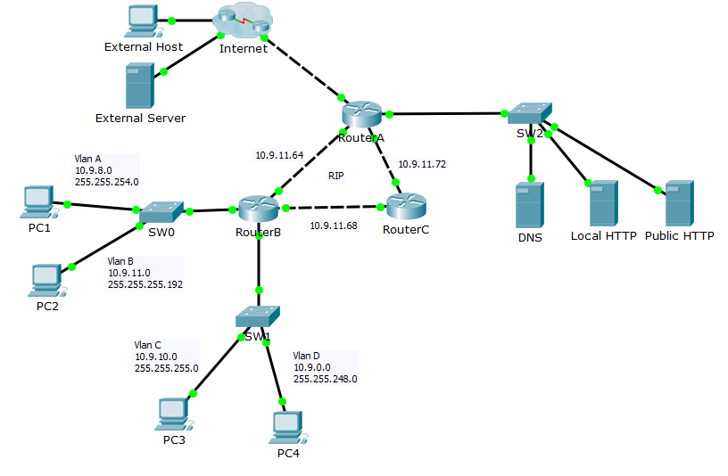

| Лаборатораная №1 | |
| Знакомство с основными инструментами и нотациями | |
| Описание | |
| GitHub — крупнейший веб-сервис для хостинга IT-проектов и их совместной разработки. В рамках данной лабораторной работы необходимо зарегистрироваться на github.com, создать личный репозиторий, создать личную веб-страницу с описанием выполнения лабораторных работ, разместить код веб-страницы в репозитории, а также разместить ее на хостинге. | |
| Ссылки | |
| Исходный код страницы | https://github.com/ThickHedgehog/Lab_ITtech-1/tree/site |
| Landing Page | https://thickhedgehog.github.io/Lab_ITtech-1/ |
| Лаборатораная №2 | |
| IT Проект | |
| Описание | |
| В рамках данной лабораторной работы необходимо в команде разработать мобильное приложение "StankinFood" с возможностью оформления заказа в столовой старого или кафе нового корпуса СТАНКИНа и создать Landing page с описанием самого проекта. | |
| Ссылки | |
| Исходный код | https://github.com/ThickHedgehog/Lab_ITtech/tree/site |
| Landing Page | https://thickhedgehog.github.io/Lab_ITtech/ |
| Лаборатораная №3 | |
| Работа с Сisco Packet Tracer | |
| Описание | |
| В рамках данной лабораторной работы необходимо настроить сеть в Сisco Packet Tracer. Packet Tracer — симулятор сети передачи данных, выпускаемый фирмой Cisco Systems. Позволяет делать работоспособные модели сети, настраивать маршрутизаторы и коммутаторы, взаимодействовать между несколькими пользователями. Лабораторная работа выполняется в среде Cisco Packet Tracer в файле-сценарии формата pka. Сценарий содержит логическую топологию в виде составной сети, моделирующей корпоративную сеть условного предприятия, подключенную к сети Интернет. | |
|  | |
| Ссылки | |
| Описание работы | https://github.com/ThickHedgehog/Lab_ITtech-1/blob/main/IDM-22-07.Svitsov.pdf |
| Репозиторий | https://github.com/ThickHedgehog/Lab_ITtech-1 |